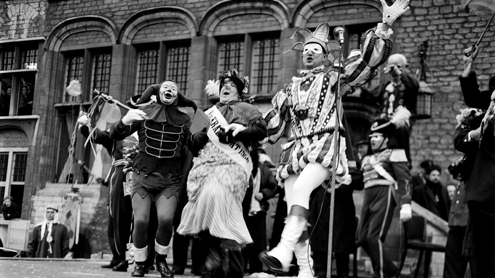
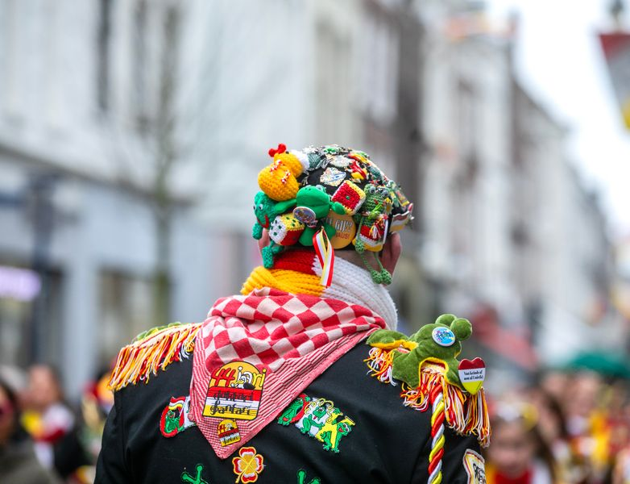
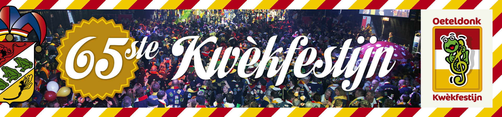
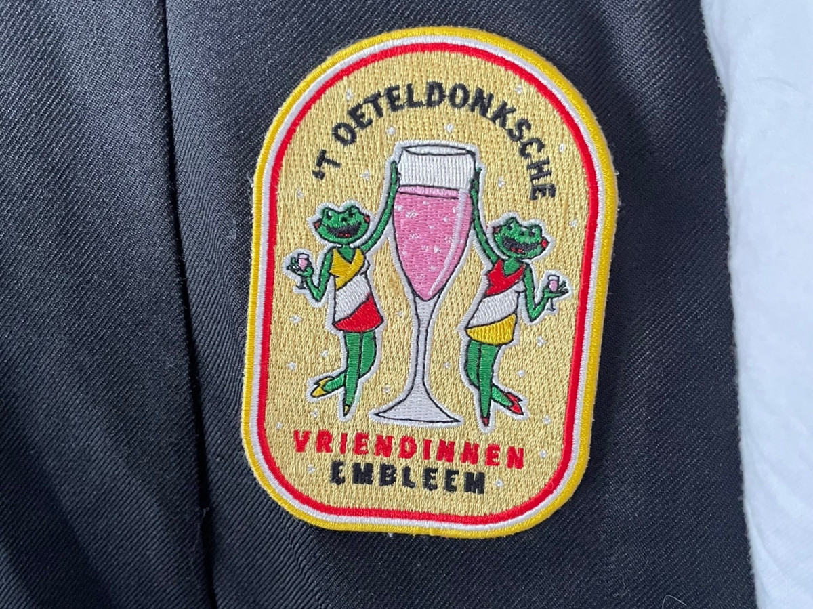
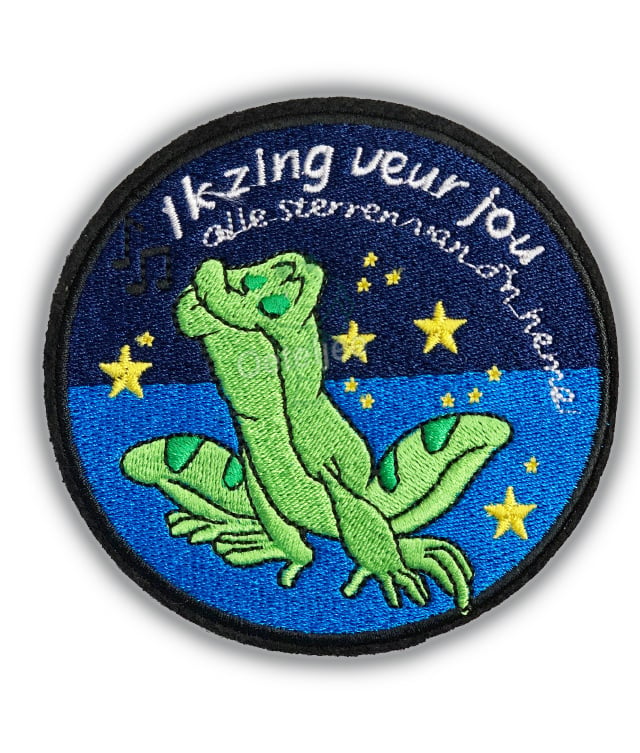
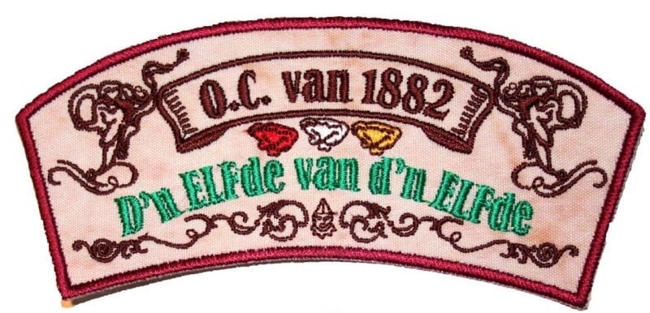
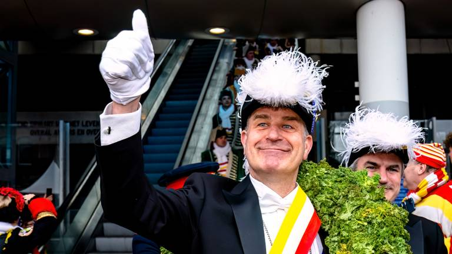
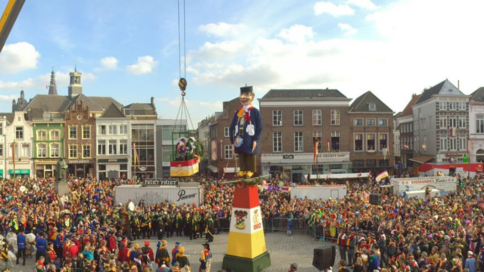

1883 – Eerste intocht van Prins Amadeiro
In 1883 werd de eerste intocht van Z.K.H. Prins Amadeiro I georganiseerd. Deze prins vertegenwoordigt de 'omgekeerde wereld' waarin boeren het voor het zeggen hebben en de vorst slechts op bezoek komt.
.jpg)
In 1881 groeide het carnaval in 's-Hertogenbosch uit tot een groot volksfeest. De katholieke kerk, vertegenwoordigd door bisschop Godschalk, sprak zich uit tegen de 'losbandigheid'. Toch koos de gemeente ervoor het feest niet te verbieden.
Op 1 oktober 1882 werd de Oeteldonksche Club van 1882 opgericht. Hiermee werd een alternatief carnaval gecreëerd waarin satire, rolwisseling en traditie centraal staan. Drie dagen lang verandert 's-Hertogenbosch in het 'durp' Oeteldonk.
In 1883 werd de eerste intocht van Z.K.H. Prins Amadeiro I georganiseerd. Deze prins vertegenwoordigt de 'omgekeerde wereld' waarin boeren het voor het zeggen hebben en de vorst slechts op bezoek komt.
Het Kwèkfestijn, een liedjeswedstrijd voor carnavalsclubkes, werd in 1958 voor het eerst georganiseerd. De 11 beste liedjes komen op CD en worden veel gespeeld tijdens het feest.
Om geld op te halen voor de organisatie van carnaval, werd in 1962 het eerste mouwembleem uitgegeven. Elk jaar verschijnt sindsdien een nieuw 'jaarschild' voor op de boerenkiel.
In 1989 werden tijdens het Kwèkfestijn vier klassiekers geboren: 'Zeg hedde gij?', 'Ik zing veur jou', 'Anoesjka' en 'De Hendjes'. Tot op de dag van vandaag worden ze luidkeels meegezongen.
Van 6 tot 17 november 2003 werd het 121-jarig bestaan van Oeteldonk groots gevierd. Er waren opera's, bals, jeugdtheater en een nieuw vaandel werd onthuld. Het jubileumlied 'Ooit' werd een klassieker.
In 2010 werd 11 november voor het eerst als start van het carnavalsseizoen groots gevierd. Sindsdien is het een vaste traditie voor Oeteldonkers.
Prins Amadeiro XXV deed in 2018 afstand van zijn rol. In 2019 nam Prins Amadeiro XXVI het stokje over, vergezeld door Adjudant Hertog Le Blanc du Nicolaï.
Door de coronapandemie werd carnaval in 2021 niet fysiek gevierd. Via livestreams, talkshows en de digitale aankomst van de Prins bleef de sfeer toch behouden.

In 2022 mocht er weer een beperkt carnaval gevierd worden. De Prins arriveerde op de Markt, maar de Grote Optocht en Knillis bleven nog achterwege.
In 2023 werd Prins Amadeiro XXVII verwelkomd. De optocht keerde terug, de intocht was zonovergoten en het motto voor 2025 werd bekend: "terug naor ut durp".
In 2025 viert Oeteldonk een jubileumjaar: 11 x 11 + 11 + 11 jaar! Het feest leeft als nooit tevoren, met een mix van traditie, vernieuwing en saamhorigheid.
